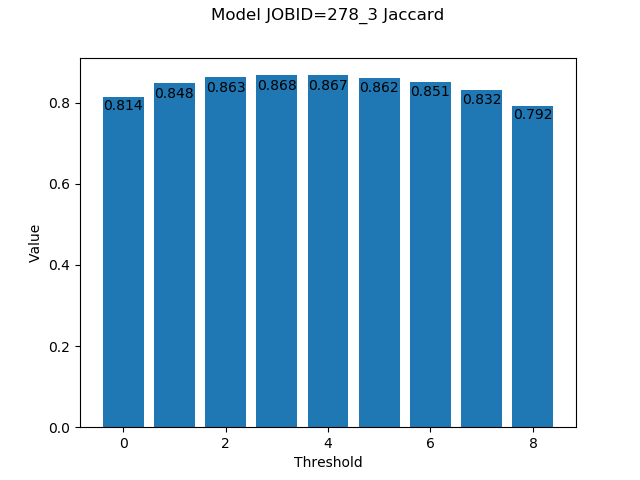
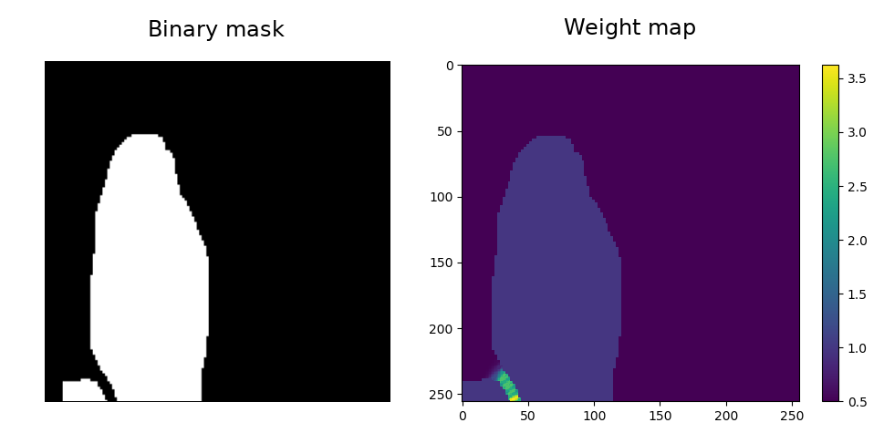
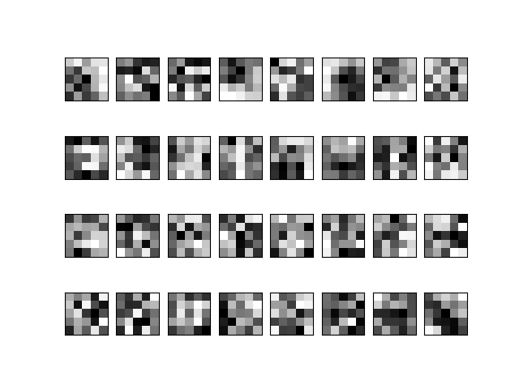

Util¶
- utils.util.limit_threads(threads_number='1')[source]¶
Limits the number of threads for a python process.
- Parameters
threads_number (int, optional) – Number of threads.
- utils.util.set_seed(seedValue=42, determinism=False)[source]¶
Sets the seed on multiple python modules to obtain results as reproducible as possible.
- Parameters
seedValue (int, optional) – Seed value.
determinism (bool, optional) – To force determism.
- utils.util.create_plots(results, job_id, chartOutDir, metric='jaccard_index')[source]¶
Create loss and main metric plots with the given results.
- Parameters
results (Keras History object) – Record of training loss values and metrics values at successive epochs. History object is returned by Keras fit() method.
job_id (str) – Jod identifier.
chartOutDir (str) – Path where the charts will be stored into.
metric (str, optional) – Metric used.
Examples
{kind=link}
{kind=link}
- utils.util.threshold_plots(preds_test, Y_test, det_eval_ge_path, det_eval_path, det_bin, n_dig, job_id, job_file, char_dir, r_val=0.5)[source]¶
Create a plot with the different metric values binarizing the prediction with different thresholds, from
0.1to0.9.- Parameters
preds_test (4D Numpy array) – Predictions made by the model. E.g.
(num_of_images, y, x, channels).Y_test (4D Numpy array) – Ground truth of the data. E.g.
(num_of_images, y, x, channels).det_eval_ge_path (str) – Path where the ground truth is stored for the DET calculation.
det_eval_path (str) – Path where the evaluation of the metric will be done.
det_bin (str) – Path to the DET binary.
n_dig (int) – The number of digits used for encoding temporal indices (e.g.
3). Used by the DET calculation binary.job_id (str) – Id of the job.
job_file (str) – Id and run number of the job.
char_dir (str) – Path to store the charts generated.
r_val (float, optional) – Threshold values to return.
- Returns
t_jac (float) – Value of the Jaccard index when the threshold is
r_val.t_voc (float) – Value of VOC when the threshold is
r_val.t_det (float) – Value of DET when the threshold is
r_val.
Examples
jac, voc, det = threshold_plots( preds_test, Y_test, det_eval_ge_path, det_eval_path, det_bin, n_dig, args.job_id, '278_3', char_dir)
Will generate 3 charts, one per each metric: IoU, VOC and DET. In the x axis represents the 9 different thresholds applied, that is:
0.1, 0.2, 0.3, ..., 0.9. The y axis is the value of the metric in each chart. For instance, the Jaccard/IoU chart will look like this:In this example, the best value,
0.868, is obtained with a threshold of0.4.
{kind=link}
- utils.util.save_tif(X, data_dir=None, filenames=None, verbose=True)[source]¶
Save images in the given directory.
- Parameters
X (4D/5D numpy array) – Data to save as images. The first dimension must be the number of images. E.g.
(num_of_images, y, x, channels)or(num_of_images, z, y, x, channels).data_dir (str, optional) – Path to store X images.
filenames (List, optional) – Filenames that should be used when saving each image.
verbose (bool, optional) – To print saving information.
- utils.util.save_tif_pair_discard(X, Y, data_dir=None, suffix='', filenames=None, discard=True, verbose=True)[source]¶
Save images in the given directory.
- Parameters
X (4D/5D numpy array) – Data to save as images. The first dimension must be the number of images. E.g.
(num_of_images, y, x, channels)or(num_of_images, z, y, x, channels).Y (4D/5D numpy array) – Data mask to save. The first dimension must be the number of images. E.g.
(num_of_images, y, x, channels)or(num_of_images, z, y, x, channels).data_dir (str, optional) – Path to store X images.
suffix (str, optional) – Suffix to apply on output directory.
filenames (List, optional) – Filenames that should be used when saving each image.
discard (bool, optional) – Wheter to discard image/mask pairs if the mask has no label information.
verbose (bool, optional) – To print saving information.
- utils.util.save_img(X=None, data_dir=None, Y=None, mask_dir=None, scale_mask=True, prefix='', extension='.png', filenames=None)[source]¶
Save images in the given directory.
- Parameters
X (4D numpy array, optional) – Data to save as images. The first dimension must be the number of images. E.g.
(num_of_images, y, x, channels).data_dir (str, optional) – Path to store X images.
Y (4D numpy array, optional) – Masks to save as images. The first dimension must be the number of images. E.g.
(num_of_images, y, x, channels).scale_mask (bool, optional) – To allow mask be multiplied by 255.
mask_dir (str, optional) – Path to store Y images.
prefix (str, optional) – Path to store generated charts.
filenames (list, optional) – Filenames that should be used when saving each image. If any provided each image should be named as:
prefix + "_x_" + image_number + extensionwhenX.ndim < 4andprefix + "_x_" + image_number + "_" + slice_numger + extensionotherwise. E.g.prefix_x_000.pngwhenX.ndim < 4orprefix_x_000_000.pngwhenX.ndim >= 4. The same applies toY.
- utils.util.make_weight_map(label, binary=True, w0=10, sigma=5)[source]¶
Generates a weight map in order to make the U-Net learn better the borders of cells and distinguish individual cells that are tightly packed. These weight maps follow the methodology of the original U-Net paper.
Based on unet/py_files/helpers.py.
- Parameters
label (3D numpy array) – Corresponds to a label image. E.g.
(y, x, channels).binary (bool, optional) – Corresponds to whether or not the labels are binary.
w0 (float, optional) – Controls for the importance of separating tightly associated entities.
sigma (int, optional) – Represents the standard deviation of the Gaussian used for the weight map.
Example
Notice that weight has been defined where the objects are almost touching each other.

{kind=link}
- utils.util.do_save_wm(labels, path, binary=True, w0=10, sigma=5)[source]¶
Retrieves the label images, applies the weight-map algorithm and save the weight maps in a folder. Uses internally
util.make_weight_map().Based on deepimagejunet/py_files/helpers.py.
- Parameters
labels (4D numpy array) – Corresponds to given label images. E.g.
(num_of_images, y, x, channels).path (str) – Refers to the path where the weight maps should be saved.
binary (bool, optional) – Corresponds to whether or not the labels are binary.
w0 (float, optional) – Controls for the importance of separating tightly associated entities.
sigma (int, optional) – Represents the standard deviation of the Gaussian used for the weight map.
- utils.util.foreground_percentage(mask, class_tag)[source]¶
Percentage of pixels that corresponds to the class in the given image.
- Parameters
mask (2D Numpy array) – Image mask to analize.
class_tag (int) – Class to find in the image.
- Returns
x – Percentage of pixels that corresponds to the class. Value between
0and1.- Return type
float
- utils.util.divide_images_on_classes(data, data_mask, out_dir, num_classes=2, th=0.8)[source]¶
Create a folder for each class where the images that have more pixels labeled as the class (in percentage) than the given threshold will be stored.
- Parameters
data (4D numpy array) – Data to save as images. The first dimension must be the number of images. E. g.``(num_of_images, y, x, channels)``.
data_mask (4D numpy array) – Data mask to save as images. The first dimension must be the number of images. E. g.
(num_of_images, y, x, channels).out_dir (str) – Path to save the images.
num_classes (int, optional) – Number of classes.
th (float, optional) – Percentage of the pixels that must be labeled as a class to save it inside that class folder.
- utils.util.save_filters_of_convlayer(model, out_dir, l_num=None, name=None, prefix='', img_per_row=8)[source]¶
Create an image of the filters learned by a convolutional layer. One can identify the layer with
l_numornameargs. If both are passednamewill be prioritized.- Parameters
model (Keras Model) – Model where the layers are stored.
out_dir (str) – Path where the image will be stored.
l_num (int, optional) – Number of the layer to extract filters from.
name (str, optional) – Name of the layer to extract filters from.
prefix (str, optional) – Prefix to add to the output image name.
img_per_row (int, optional) – Filters per row on the image.
- Raises
ValueError – if
l_numandnamenot provided.
Examples
To save the filters learned by the layer called
conv1one can call the function as followssave_filters_of_convlayer(model, char_dir, name="conv1", prefix="model")
That will save in
out_diran image like this:
{kind=link}
- utils.util.check_masks(path, n_classes=2)[source]¶
Check wheter the data masks have the correct labels inspection a few random images of the given path. If the function gives no error one should assume that the masks are correct.
- Parameters
path (str) – Path to the data mask.
n_classes (int, optional) – Maximum classes that the masks must contain.
- utils.util.img_to_onehot_encoding(img, num_classes=2)[source]¶
Converts image given into one-hot encode format.
The opposite function is
onehot_encoding_to_img().- Parameters
img (Numpy 3D/4D array) – Image. E.g.
(y, x, channels)or(z, y, x, channels).num_classes (int, optional) – Number of classes to distinguish.
- Returns
one_hot_labels – Data one-hot encoded. E.g.
(y, x, num_classes)or(z, y, x, num_classes).- Return type
Numpy 3D/4D array
- utils.util.onehot_encoding_to_img(encoded_image)[source]¶
Converts one-hot encode image into an image with jus tone channel and all the classes represented by an integer.
The opposite function is
img_to_onehot_encoding().- Parameters
encoded_image (Numpy 3D/4D array) – Image. E.g.
(y, x, channels)or(z, y, x, channels).- Returns
img – Data one-hot encoded. E.g.
(z, y, x, num_classes).- Return type
Numpy 3D/4D array
- utils.util.load_data_from_dir(data_dir, crop=False, crop_shape=None, overlap=(0, 0), padding=(0, 0), return_filenames=False, reflect_to_complete_shape=False)[source]¶
Load data from a directory. If
crop=Falseall the data is suposed to have the same shape.- Parameters
data_dir (str) – Path to read the data from.
crop (bool, optional) – Crop each image into desired shape pointed by
crop_shape.crop_shape (Tuple of 3 ints, optional) – Shape of the crop to be made. E.g.
(y, x, channels).overlap (Tuple of 2 floats, optional) – Amount of minimum overlap on x and y dimensions. The values must be on range
[0, 1), that is,0%or99%of overlap. E. g.(y, x).padding (Tuple of 2 ints, optional) – Size of padding to be added on each axis
(y, x). E.g.(24, 24).return_filenames (bool, optional) – Return a list with the loaded filenames. Useful when you need to save them afterwards with the same names as the original ones.
reflect_to_complete_shape (bool, optional) – Wheter to increase the shape of the dimension that have less size than selected patch size padding it with ‘reflect’.
- Returns
data (4D Numpy array or list of 3D Numpy arrays) – Data loaded. E.g.
(num_of_images, y, x, channels)if all files have same shape, otherwise a list of(y, x, channels)arrays will be returned.data_shape (List of tuples) – Shapes of all 3D images readed. Useful to reconstruct the original images together with
crop_shape.crop_shape (List of tuples) – Shape of the loaded 3D images after cropping. Useful to reconstruct the original images together with
data_shape.filenames (List of str, optional) – Loaded filenames.
Examples
# EXAMPLE 1 # Case where we need to load 165 images of shape (1024, 768) data_path = "data/train/x" load_data_from_dir(data_path) # The function will print the shape of the created array. In this example: # *** Loaded data shape is (165, 768, 1024, 1) # Notice height and width swap because of Numpy ndarray terminology # EXAMPLE 2 # Case where we need to load 165 images of shape (1024, 768) but # cropping them into (256, 256, 1) patches data_path = "data/train/x" crop_shape = (256, 256, 1) load_data_from_dir(data_path, crop=True, crop_shape=crop_shape) # The function will print the shape of the created array. In this example: # *** Loaded data shape is (1980, 256, 256, 1)
- utils.util.load_ct_data_from_dir(data_dir, shape=None)[source]¶
Load CT data from a directory.
- Parameters
data_dir (str) – Path to read the data from.
shape (3D int tuple, optional) – Shape of the data to load. If is not provided the shape is calculated automatically looping over all data files and it will be the maximum value found per axis. So, given the value the process should be faster. E.g.
(y, x, channels).
- Returns
data – Data loaded. E.g.
(num_of_images, y, x, channels).- Return type
4D Numpy array
Examples
# EXAMPLE 1 # Case where we need to load 165 images of shape (1024, 768) data_path = "data/train/x" data_shape = (1024, 768, 1) load_data_from_dir(data_path, data_shape) # The function will print list's first position array's shape. In this example: # *** Loaded data[0] shape is (165, 768, 1024, 1) # Notice height and width swap because of Numpy ndarray terminology
- utils.util.load_3d_images_from_dir(data_dir, crop=False, crop_shape=None, verbose=False, overlap=(0, 0, 0), padding=(0, 0, 0), median_padding=False, reflect_to_complete_shape=False, return_filenames=False)[source]¶
Load data from a directory.
- Parameters
data_dir (str) – Path to read the data from.
crop (bool, optional) – Crop each 3D image when readed.
crop_shape (Tuple of 4 ints, optional) – Shape of the subvolumes to create when cropping. E.g.
(z, y, x, channels).verbose (bool, optional) – Wheter to enable verbosity.
overlap (Tuple of 3 floats, optional) – Amount of minimum overlap on z, y and x dimensions. The values must be on range
[0, 1), that is,0%or99%of overlap. E.g.(z, y, x).padding (Tuple of 3 ints, optional) – Size of padding to be added on each axis
(z, y, x). E.g.(24, 24, 24).median_padding (bool, optional) – If
Truethe padding value is the median value. IfFalse, the added values are zeroes.reflect_to_complete_shape (bool, optional) – Wheter to increase the shape of the dimension that have less size than selected patch size padding it with ‘reflect’.
return_filenames (bool, optional) – Return a list with the loaded filenames. Useful when you need to save them afterwards with the same names as the original ones.
- Returns
data (5D Numpy array or list of 4D Numpy arrays) – Data loaded. E.g.
(num_of_images, z, y, x, channels)if all files have same shape, otherwise a list of(1, z, y, x, channels)arrays will be returned.data_shape (List of tuples) – Shapes of all 3D images readed. Useful to reconstruct the original images together with
crop_shape.crop_shape (List of tuples) – Shape of the loaded 3D images after cropping. Useful to reconstruct the original images together with
data_shape.filenames (List of str, optional) – Loaded filenames.
Examples
# EXAMPLE 1 # Case where we need to load 20 images of shape (1024, 1024, 91, 1) data_path = "data/train/x" data = load_data_from_dir(data_path) # The function will print list's first position array's shape. In this example: # *** Loaded data[0] shape is (20, 91, 1024, 1024, 1) # Notice height, width and depth swap as skimage.io imread function # is used to load images # EXAMPLE 2 # Same as example 1 but with unknown shape, cropping them into (256, 256, 40, 1) subvolumes with minimum # overlap and storing filenames. data_path = "data/train/x" X_test, orig_test_img_shapes, crop_test_img_shapes, te_filenames = load_3d_images_from_dir( test_path, crop=True, crop_shape=(256, 256, 40, 1), overlap=(0,0,0), return_filenames=True) # The function will print the shape of the created array which its size is the concatenation in 0 axis of all # subvolumes created for each 3D image in the given path. For example: # *** Loaded data shape is (350, 40, 256, 256, 1) # Notice height, width and depth swap as skimage.io imread function is used to load images.
- utils.util.check_downsample_division(X, d_levels)[source]¶
Ensures
Xshape is divisible by2timesd_levelsadding padding if necessary.- Parameters
X (4D Numpy array) – Data to check if its shape. E.g.
(10, 1000, 1000, 1).d_levels (int) – Levels of downsampling by
2.
- Returns
X (4D Numpy array) – Data divisible by 2
d_levelstimes.o_shape (4 int tuple) – Original shape of
X. E.g.(10, 1000, 1000, 1).
- utils.util.save_npy_files(X, data_dir=None, filenames=None, verbose=True)[source]¶
Save images in the given directory.
- Parameters
X (4D/5D numpy array) – Data to save as images. The first dimension must be the number of images. E.g.
(num_of_images, y, x, channels)or(num_of_images, z, y, x, channels).data_dir (str, optional) – Path to store X images.
filenames (List, optional) – Filenames that should be used when saving each image.
verbose (bool, optional) – To print saving information.
- utils.util.pad_and_reflect(img, crop_shape, verbose=False)[source]¶
Load data from a directory.
- Parameters
img (3D/4D Numpy array) – Image to pad. E.g.
(y, x, channels)or(z, y, x, c).crop_shape (Tuple of 3/4 ints, optional) – Shape of the subvolumes to create when cropping. E.g.
(y, x, channels)or(z, y, x, channels).verbose (bool, optional) – Wheter to output information.
- Returns
img – Image padded (if needed). E.g.
(y, x, channels)or(z, y, x, channels).- Return type
3D/4D Numpy array